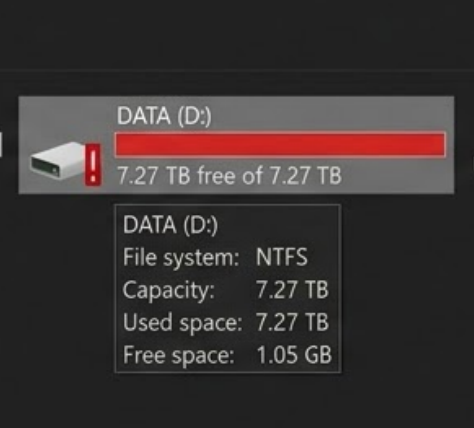

Problema
"Tenho muitos arquivos, como posso organizar?"

Disco de dados com 7.27 TB ocupados — apenas 1.05 GB livres

IAs como Claude Cowork já organizam arquivos de trabalho e dia-a-dia de forma autônoma — motivação para explorar técnicas de agrupamento automático em coleções pessoais de imagens.
1.1 Dataset, Extração e Normalização de Embeddings
Dataset & Amostragem
- 22.258 imagens pessoais (fotos, wallpapers, AI art, screenshots, memes)
- Amostra aleatória: n = 8.000 (seed = 42)
Feature Extraction
- CLIP ViT-B/32 [1] via fastembed-rs (ONNX Runtime)
- Embedding: x ∈ ℝ512 por imagem
- Pré-Processamento: resize 224×224, normalização ImageNet
Normalização de Embeddings
- Embeddings CLIP são projetados em L2 pós-extração [1]
- Para vetores unitários, vale a identidade:
- K-Means (euclidiano) passa a agrupar por semântica angular, não por magnitude
- Ex.: x=(3,4) → x̂=(0.6, 0.8) | y=(6,8) → ŷ=(0.6, 0.8) — mesma direção, mesma representação
1.2 K-Means, Métricas e Visualização
K-Means++ [2][4]
- Inicialização inteligente: escolhe centroides iniciais com probabilidade proporcional à distância ao centroide mais próximo já escolhido, evitando convergência para mínimos locais ruins
- K ∈ {2, ..., 15}, 3 runs por K, melhor por WCSS
- Rodadas de 100 iterações
Visualização
- PCA (Hotelling, 1933): projeção linear sobre os dois autovetores principais da matriz de covariância, computados via power iteration com deflação
- Redução ℝ512 → ℝ2 para inspeção visual dos clusters
Elbow Method (WCSS)
- K — número de clusters
- Ck — conjunto de pontos do cluster k
- μk — centroide do cluster k
- xi — embedding da imagem i
Silhouette Score [3]
- a(i) — distância média ao próprio cluster (coesão)
- b(i) — distância média ao cluster vizinho mais próximo (separação)
- s(i) ∈ [−1, 1] — quanto maior, melhor a atribuição
1.3 Software e Ambiente

2.1 Determinação do K Ótimo
| K | WCSS | Silhouette |
|---|---|---|
| 2 | 3753.7 | 0.0559 |
| 3 | 3627.7 | 0.0511 |
| 4 | 3520.9 | 0.0576 |
| 5 | 3454.1 | 0.0558 |
| 8 | 3290.3 | 0.0488 |
| 15 | 3087.1 | 0.0554 |
- Melhor K = 4 (silhouette = 0.0576)
- Cotovelo sutil em K=4, confirmado pelo pico de silhouette

2.2 Análise dos Clusters (K=4)
| Cluster | N | % | Descrição | Top Folders | Orientação | Tam. Med. |
|---|---|---|---|---|---|---|
| 0 | 2125 | 26.6 | Arte digital / wallpapers | wallpapers 35%, ai_images 32% | 46% land, 43% sq | 413 KB |
| 1 | 1972 | 24.6 | Cenas e ambientes | iPhone 81%, people 8% | 70% portrait | 8.5 MB |
| 2 | 2301 | 28.8 | Retratos / pessoas | people 50%, iPhone 33% | 75% portrait | 5.9 MB |
| 3 | 1602 | 20.0 | Screenshots / texto | iPhone 57%, backup 28% | 55% port, 36% land | 241 KB |
Padrões Identificados
- K-Means agrupou por semântica visual, não por metadados
- Fotos de iPhone nos 4 clusters — conteúdo > origem
- Formato (.png/.jpg) distribuído uniformemente
- Aspect ratio correlaciona: retratos=portrait, wallpapers=landscape
Qualidade da Segmentação
- Silhouette 0.058 — clusters com sobreposição parcial
- Alta variabilidade intra-classe em imagens pessoais
- Validação cruzada com metadados confirma coerência semântica
Limitações
- PCA 2D perde informação de 512D
- K-Means assume clusters esféricos

Projeção PCA dos 8.000 embeddings CLIP, coloridos pela atribuição K-Means (K=4). Marcadores indicam os centroides projetados.

Coloração por diretório de origem. Imagens de uma mesma fonte (e.g. iPhone) distribuem-se entre múltiplos clusters, evidenciando agrupamento por conteúdo semântico.

Coloração por extensão de arquivo. A distribuição uniforme de .png e .jpg entre clusters indica que o formato não é fator discriminante.

Gradiente por tamanho de arquivo. Correlação parcial com os clusters: screenshots tendem a ser menores, fotos de câmera maiores.

Coloração por aspect ratio. Forte correspondência com a semântica dos clusters: retratos predominam em portrait, wallpapers em landscape e square.
Referências
[1] Radford, A. et al. Learning Transferable Visual Models From Natural Language Supervision. ICML, 2021.
[2] MacQueen, J. Some methods for classification and analysis of multivariate observations. Berkeley Symp., 1967.
[3] Rousseeuw, P. Silhouettes: A graphical aid to the interpretation and validation of cluster analysis. J. Comput. Appl. Math., 1987.
[4] Arthur, D. & Vassilvitskii, S. k-means++: The advantages of careful seeding. SODA, 2007.
Código-fonte: github.com/vitoryeso/machine-learning-master-class